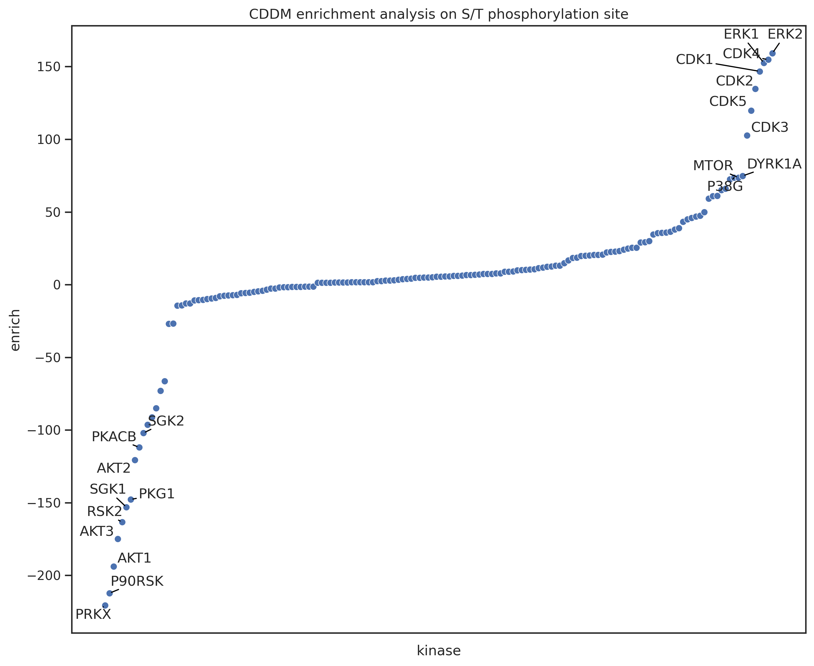
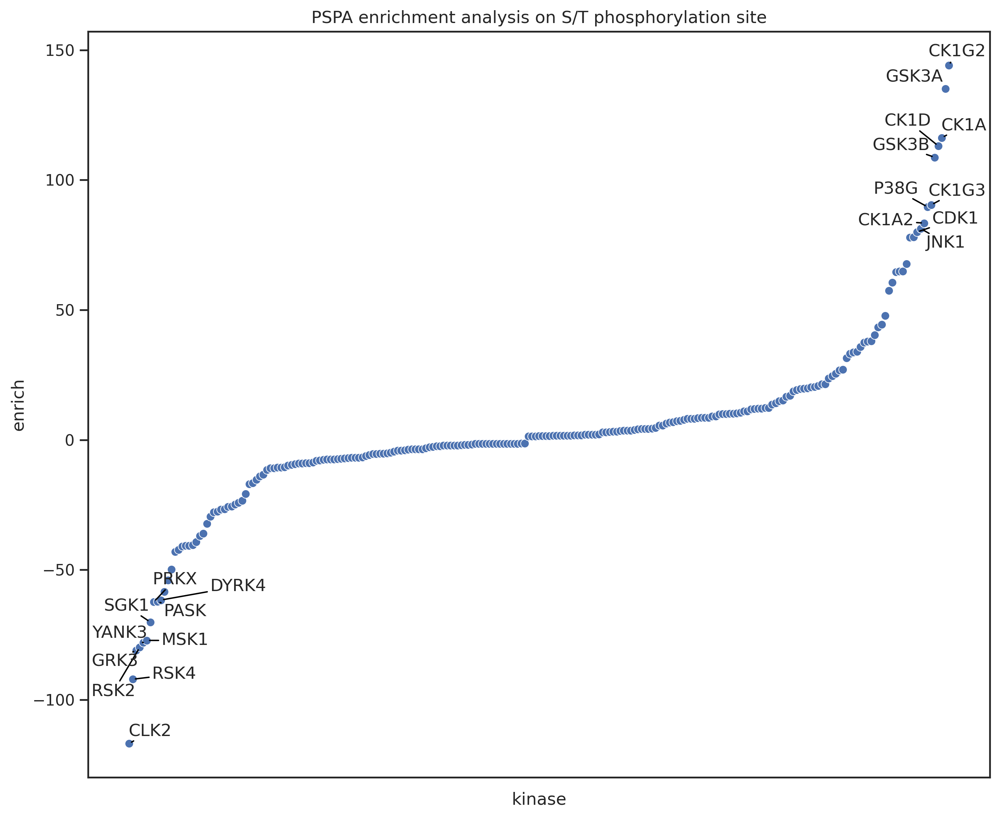
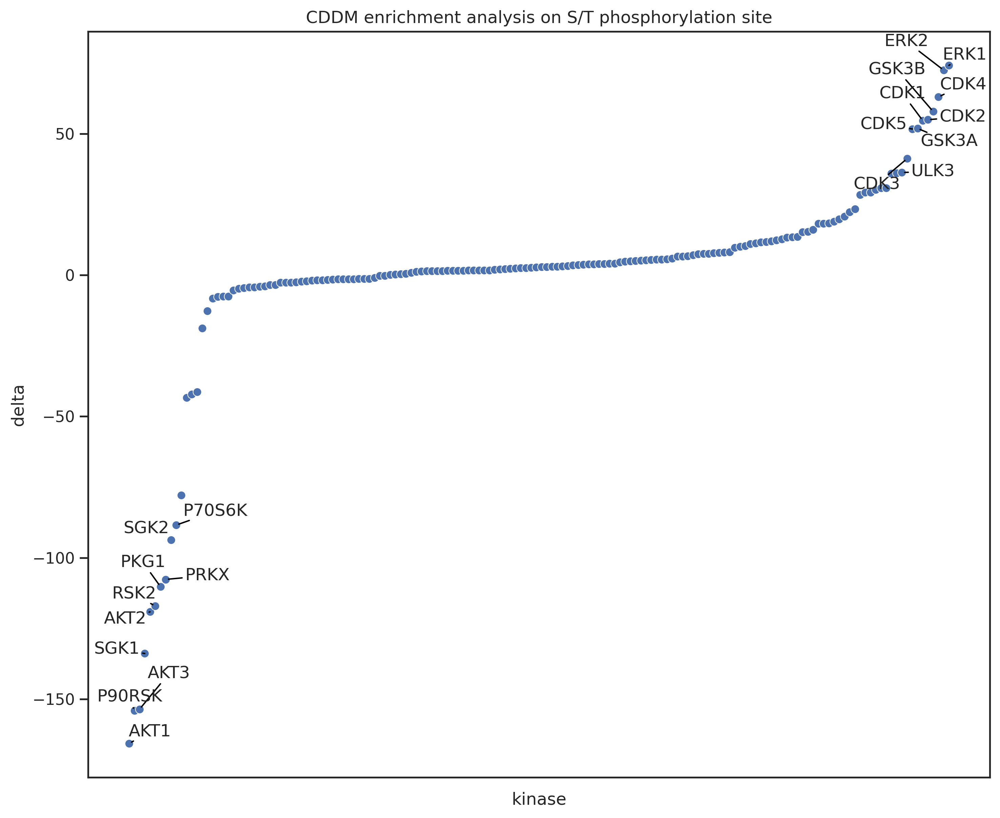
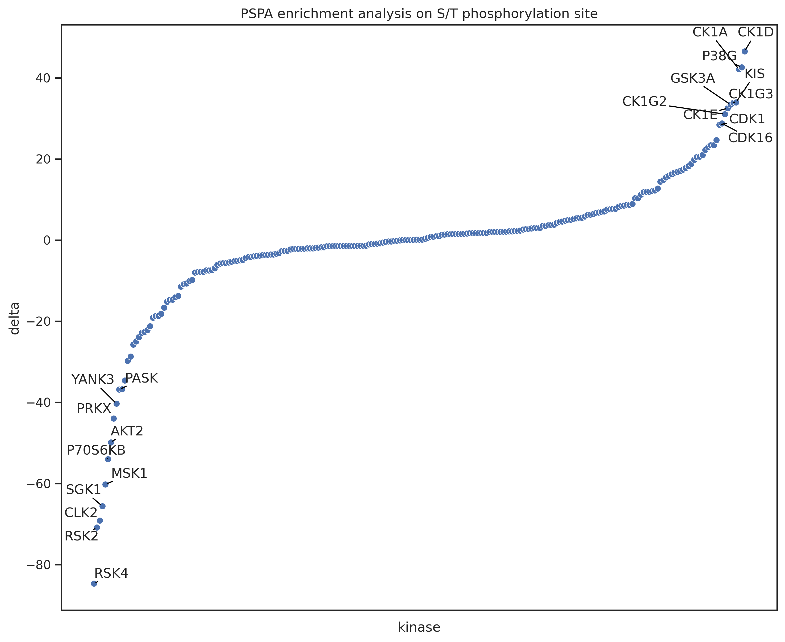
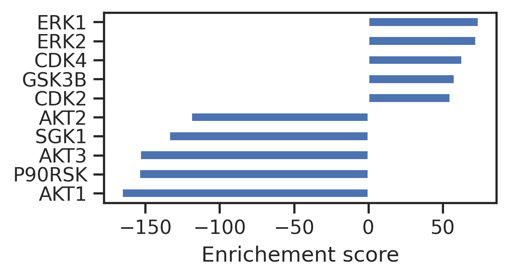
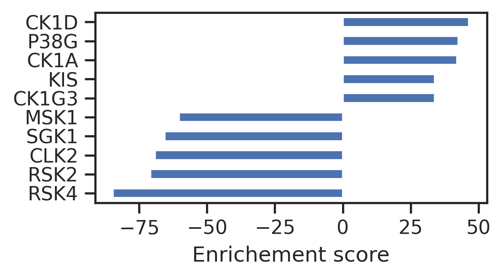
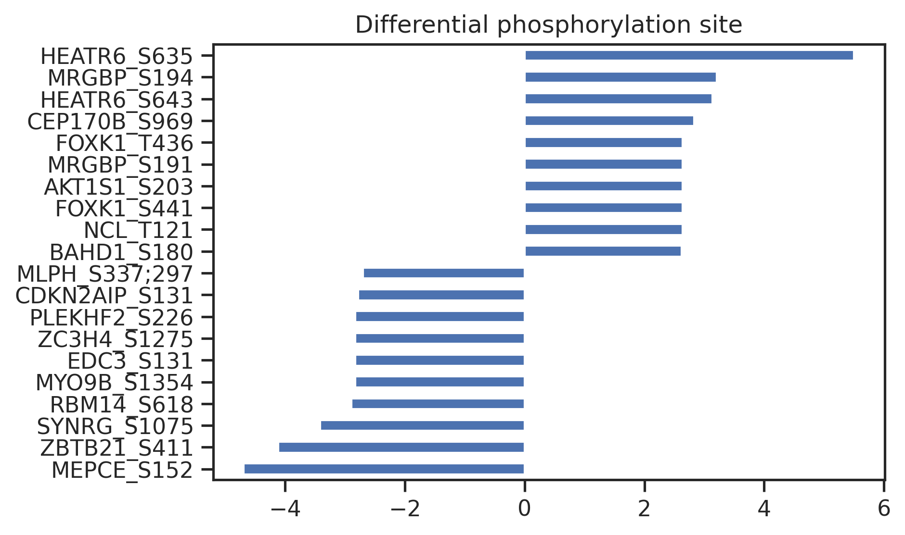
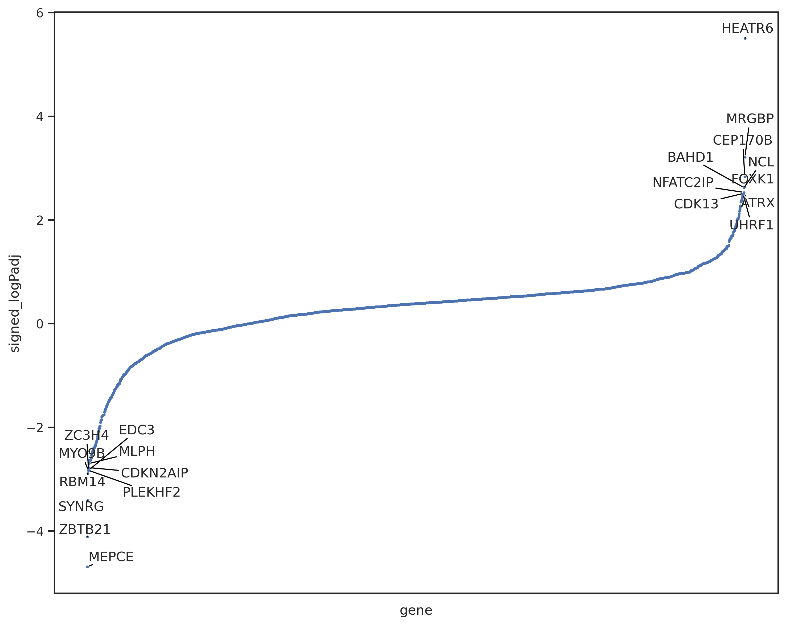
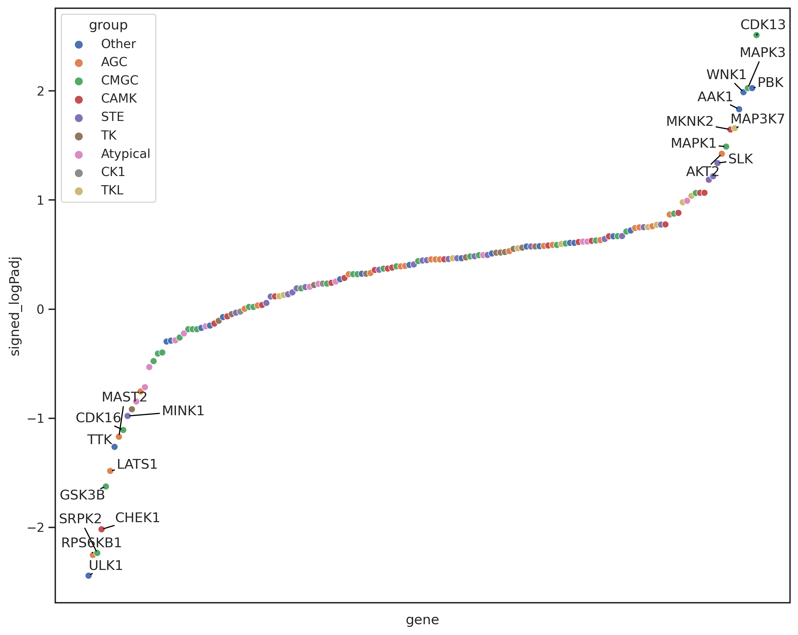

!pip install git+https://github.com/sky1ove/katlas.git -qKinase enrichment analysis - AKTi

In this session, we will analyze the differential change of phosphorylation sites in phosphoproteomics dataset.
Setup
# katlas
from katlas.core import *
from katlas.plot import plot_rank, set_sns
# utils
import pandas as pd, numpy as np, seaborn as sns
from matplotlib import pyplot as plt
from functools import reduce, partial
from tqdm import tqdm
# statistics
from scipy.stats import ttest_rel,ttest_ind
from statsmodels.stats.multitest import multipletests
# disable warning
import warnings
warnings.filterwarnings("ignore", message="converting a masked element to nan")
pd.set_option('display.precision', 15)
set_sns()Data
The phosphoproteomics dataset is from paper Chemical Phosphoproteomics Sheds New Light on the Targets and Modes of Action of AKT Inhibitors; five clinical AKT inhibitors are evaluated in this study.

df = pd.read_csv('https://github.com/sky1ove/katlas/raw/main/nbs/raw/AKT_inhibitor.csv')df.head()| gene_site | site_seq | Control_R1 | Control_R2 | Control_R3 | Control_R4 | AZD5363_R1 | AZD5363_R2 | AZD5363_R3 | AZD5363_R4 | GSK2110183_R1 | GSK2110183_R2 | GSK2110183_R3 | GSK2110183_R4 | GSK690693_R1 | GSK690693_R2 | GSK690693_R3 | GSK690693_R4 | Ipatasertib_R1 | Ipatasertib_R2 | Ipatasertib_R3 | Ipatasertib_R4 | MK-2206_R1 | MK-2206_R2 | MK-2206_R3 | MK-2206_R4 | |
|---|---|---|---|---|---|---|---|---|---|---|---|---|---|---|---|---|---|---|---|---|---|---|---|---|---|---|
| 0 | AAK1_S637 | AGHRRILsDVtHsAV | 14.167260000000001 | 13.791940000000000 | 13.888430000000000 | 13.991310000000000 | 14.581049999999999 | 14.802630000000001 | 14.723060000000000 | 14.857880000000000 | 14.713820000000000 | 14.413119999999999 | 14.362840000000000 | 14.710800000000001 | 14.858169999999999 | 14.523330000000000 | 14.47591 | 14.810269999999999 | 14.541550000000001 | 14.598560000000001 | 14.669480000000000 | 14.267690000000000 | 14.500560000000000 | 14.700110000000000 | 14.642170000000000 | 14.394790000000000 |
| 1 | ABCF1_S105 | MERLKKLsVPtsDEE | 14.184260000000000 | 14.422390000000000 | 14.320520000000000 | 14.310689999999999 | 14.905970000000000 | 15.157950000000000 | 14.848050000000001 | 14.968950000000000 | 14.680930000000000 | 14.768760000000000 | 14.708550000000001 | 14.866390000000001 | 14.786070000000000 | 14.860379999999999 | 14.82788 | 14.924620000000001 | 14.888140000000000 | 15.019850000000000 | 14.857740000000000 | 14.809049999999999 | 14.915050000000001 | 14.815270000000000 | 15.067920000000001 | 14.526149999999999 |
| 2 | ACIN1_S208 | HSPRKSSsIsEEKGD | 15.956730000000000 | 15.791060000000000 | NaN | 15.961280000000000 | 14.763690000000000 | 14.926340000000000 | NaN | 14.933990000000000 | 15.205380000000000 | 15.264620000000001 | NaN | 15.108590000000000 | 14.977750000000000 | 14.868259999999999 | NaN | 14.728800000000000 | 15.004510000000000 | 14.969420000000000 | NaN | 14.797020000000000 | 14.923180000000000 | 15.012650000000001 | NaN | 15.046220000000000 |
| 3 | ACIN1_S216 | IsEEKGDsDDEKPRK | 17.457689999999999 | 16.997420000000002 | 17.373349999999999 | 17.434950000000001 | 16.252500000000001 | 16.341049999999999 | 16.316970000000001 | 16.411560000000001 | 16.706840000000000 | 16.672650000000001 | 16.749569999999999 | 16.590119999999999 | 16.460960000000000 | 16.370940000000001 | 16.38372 | 16.193570000000001 | 16.486070000000002 | 16.445869999999999 | 16.275169999999999 | 16.242329999999999 | 16.405529999999999 | 16.500750000000000 | 16.558160000000001 | 16.533030000000000 |
| 4 | ACIN1_S240 | QARAAkLsEGsQPAE | 13.211040000000001 | 13.129730000000000 | 13.565530000000001 | 13.572440000000000 | 12.127129999999999 | 12.011320000000000 | 12.125540000000001 | 11.806080000000000 | 12.349919999999999 | 12.294269999999999 | 12.117860000000000 | 12.713939999999999 | 12.116260000000000 | 12.040110000000000 | 12.09775 | 12.322410000000000 | 11.838360000000000 | 12.090270000000000 | 12.027799999999999 | 11.561370000000000 | 12.093400000000001 | 12.152469999999999 | 12.159110000000000 | 11.888489999999999 |
df.columnsIndex(['gene_site', 'site_seq', 'Control_R1', 'Control_R2', 'Control_R3',
'Control_R4', 'AZD5363_R1', 'AZD5363_R2', 'AZD5363_R3', 'AZD5363_R4',
'GSK2110183_R1', 'GSK2110183_R2', 'GSK2110183_R3', 'GSK2110183_R4',
'GSK690693_R1', 'GSK690693_R2', 'GSK690693_R3', 'GSK690693_R4',
'Ipatasertib_R1', 'Ipatasertib_R2', 'Ipatasertib_R3', 'Ipatasertib_R4',
'MK-2206_R1', 'MK-2206_R2', 'MK-2206_R3', 'MK-2206_R4'],
dtype='object')ctrl = df.columns[df.columns.str.contains('Control')]
# below are five AKT inhibitors
AZD = df.columns[df.columns.str.contains('AZD5363')]
GSK2 = df.columns[df.columns.str.contains('GSK2110183')]
GSK6 = df.columns[df.columns.str.contains('GSK690693')]
ipa = df.columns[df.columns.str.contains('Ipatasertib')]
MK = df.columns[df.columns.str.contains('MK')]T-test
Let’s use AZD for example:
azd = get_ttest(df,ctrl, AZD)Computing t-tests: 100%|██████████| 10900/10900 [00:03<00:00, 3189.49it/s]info = df.iloc[:,:2]azd = pd.concat([info,azd],axis=1)azd.sort_values('signed_logP')| gene_site | site_seq | log2FC | p_value | p_adj | significant | signed_logP | signed_logPadj | |
|---|---|---|---|---|---|---|---|---|
| 152 | MEPCE_S152 | GGGkRRNsCNVGGGG | -2.501130000000000 | 0.000000003725373 | 0.000020303283625 | True | -8.428830220767583 | -4.692433718490942 |
| 282 | ZBTB21_S411 | PHRLRsFsAsQStDR | -1.058145000000000 | 0.000000021195787 | 0.000077011358788 | True | -7.673750457074995 | -4.113445213854034 |
| 258 | SYNRG_S1075 | GSHkRsLsLGDKEIs | -1.755589999999998 | 0.000000142382598 | 0.000387992579963 | True | -6.846543086461211 | -3.411176579848550 |
| 228 | RBM14_S618 | LsDyrRLsEsQLsFR | -1.419820000000001 | 0.000000823835017 | 0.001282828812526 | True | -6.084159752241660 | -2.891831294315293 |
| 81 | EDC3_S131 | KsQDVAVsPQQQQCs | -0.681769999999998 | 0.000001416070656 | 0.001481904192858 | True | -5.848915076580682 | -2.829179873184061 |
| ... | ... | ... | ... | ... | ... | ... | ... | ... |
| 158 | MRGBP_S191 | DkVLtANsNPssPsA | 1.841170000000000 | 0.000003460496478 | 0.002317484867381 | True | 5.460861588432619 | 2.634983093012703 |
| 56 | CEP170B_S969 | VSLRSGKsGPsPTtP | 0.851699999999999 | 0.000001201825941 | 0.001481904192858 | True | 5.920158426163190 | 2.829179873184061 |
| 126 | HEATR6_S643 | LEETsVssPKGSSEP | 1.443809999999999 | 0.000000403772190 | 0.000733519478986 | True | 6.393863596312025 | 3.134588348755045 |
| 159 | MRGBP_S194 | LtANsNPssPsAAkR | 1.646900000000000 | 0.000000283021826 | 0.000616987581264 | True | 6.548180070969473 | 3.209723577364868 |
| 125 | HEATR6_S635 | KKAPAGPsLEETsVs | 1.418654999999998 | 0.000000000288469 | 0.000003144313232 | True | 9.539900694606031 | 5.502474196665407 |
10900 rows × 8 columns
Dataset processing
There are NaNs in site_seq, we will drop them
azd=azd.dropna(subset='site_seq')Some site_seq contains multiple sequences splitted by “;”, we will take the first one.
azd['site_seq2'] = azd.site_seq.str.split(';').str[0]Make sure site sequence length are all consistent
azd['len'] = azd.site_seq2.str.len()azd.len.value_counts()15 10541
Name: len, dtype: int64azd['acceptor'] = azd.site_seq2.str[7]Substrate scoring
pspa_out = predict_kinase_df(azd,seq_col='site_seq2', **param_PSPA)
cddm_out = predict_kinase_df(azd,seq_col='site_seq2', **param_CDDM)input dataframe has a length 10541
Preprocessing
Finish preprocessing
Calculating position: [-5, -4, -3, -2, -1, 0, 1, 2, 3, 4, 5]
input dataframe has a length 10541
Preprocessing
Finish preprocessing
Calculating position: [-7, -6, -5, -4, -3, -2, -1, 0, 1, 2, 3, 4, 5, 6, 7]100%|██████████| 396/396 [00:20<00:00, 19.35it/s]
100%|██████████| 289/289 [00:05<00:00, 53.90it/s]Kinase enrichment
def get_enrichment(score_df, # output df of predict_kinase_df
site_df, # df that contains site sequence
signed_p_col, # column of p value to determine significant
is_Y=False, # whether or not it is Y site or S/T site
top_n = 5, # top n kinase to consider for each site
signed_p_thr=1.3, # threshold for p value, default is 1.3 for -log10(0.05)=1.3
):
"Calculate kinase enrichment score for sites with signed log10(p) that pass a threshold(1.3) "
if is_Y:
idx_up = site_df.index[(site_df.acceptor.str.upper()=="Y") & (site_df[signed_p_col]>= signed_p_thr)]
idx_dn = site_df.index[(site_df.acceptor.str.upper()=="Y") & (site_df[signed_p_col]<= -signed_p_thr)]
else:
idx_up = site_df.index[(site_df.acceptor.str.upper()!="Y") & (site_df[signed_p_col]>= signed_p_thr)]
idx_dn = site_df.index[(site_df.acceptor.str.upper()!="Y") & (site_df[signed_p_col]<= -signed_p_thr)]
up_site = site_df.loc[idx_up]
dn_site = site_df.loc[idx_dn]
up_score = score_df.loc[idx_up]
dn_score = score_df.loc[idx_dn]
def top_kinases(site_row,top_n=5):
# Sort the row in descending order and get the top n kinases
top_kinases = site_row.sort_values(ascending=False).head(top_n)
# Get the counts of the top kinases
kinase_counts = top_kinases.index.value_counts()
return kinase_counts
func = partial(top_kinases,top_n=top_n)
up_cnt = up_score.apply(func,axis=1)
dn_cnt = dn_score.apply(func,axis=1)
df_up_cnt = up_cnt.sum().reset_index(name = 'up_cnt')
df_dn_cnt = dn_cnt.sum().reset_index(name = 'dn_cnt')
df_w_up = up_cnt.multiply(abs(up_site[signed_p_col]),axis=0).sum().reset_index(name = 'up_weighted_cnt')
df_w_dn = dn_cnt.multiply(abs(dn_site[signed_p_col]),axis=0).sum().reset_index(name = 'dn_weighted_cnt')
dfs = [df_up_cnt,df_dn_cnt,df_w_up,df_w_dn]
result = reduce(lambda left, right: pd.merge(left, right, how='outer'), dfs)
result = result.fillna(0)
result['enrich'] = result.apply(lambda r: r.up_weighted_cnt if r.up_weighted_cnt >= r.dn_weighted_cnt else -r.dn_weighted_cnt,axis=1)
result['delta'] = result.up_weighted_cnt - result.dn_weighted_cnt
result = result.rename(columns={'index':'kinase'})
return resultst_cddm = get_enrichment(cddm_out,azd,'signed_logPadj',is_Y=False,top_n=10)
st_pspa = get_enrichment(pspa_out,azd,'signed_logPadj',is_Y=False,top_n=10)st_cddm.sort_values('delta')| kinase | up_cnt | dn_cnt | up_weighted_cnt | dn_weighted_cnt | enrich | delta | |
|---|---|---|---|---|---|---|---|
| 1 | AKT1 | 16.0 | 97.0 | 28.014637687450698 | 193.761669272405697 | -193.761669272405697 | -165.747031584955010 |
| 105 | P90RSK | 32.0 | 109.0 | 58.098473889503012 | 212.249246788316384 | -212.249246788316384 | -154.150772898813386 |
| 3 | AKT3 | 12.0 | 86.0 | 21.208488478746148 | 174.789354616435332 | -174.789354616435332 | -153.580866137689185 |
| 137 | SGK1 | 11.0 | 77.0 | 19.167633111311090 | 153.062103765423331 | -153.062103765423331 | -133.894470654112240 |
| 2 | AKT2 | 1.0 | 59.0 | 1.488649929392079 | 120.636086963556124 | -120.636086963556124 | -119.147437034164042 |
| ... | ... | ... | ... | ... | ... | ... | ... |
| 24 | CDK2 | 79.0 | 42.0 | 134.684374307262971 | 79.714065821588065 | 134.684374307262971 | 54.970308485674906 |
| 57 | GSK3B | 34.0 | 4.0 | 65.092287561809968 | 7.255916941274301 | 65.092287561809968 | 57.836370620535668 |
| 26 | CDK4 | 90.0 | 48.0 | 154.775681051118625 | 91.791473951369142 | 154.775681051118625 | 62.984207099749483 |
| 48 | ERK2 | 93.0 | 46.0 | 159.173581583534769 | 86.679903384607471 | 159.173581583534769 | 72.493678198927299 |
| 47 | ERK1 | 89.0 | 41.0 | 152.555249092565077 | 78.387498733539289 | 152.555249092565077 | 74.167750359025788 |
158 rows × 7 columns
Enrich
set_sns()“enrich” is the bigger value among up_weighted_cnt and dn_weighted_cnt
set_sns()
plot_rank(st_cddm.sort_values('enrich'),'kinase','enrich')
plt.title('CDDM enrichment analysis on S/T phosphorylation site');
plot_rank(st_pspa.sort_values('enrich'),'kinase','enrich')
plt.title('PSPA enrichment analysis on S/T phosphorylation site');

Delta
“delta” is the difference between up_weighted_cnt and dn_weighted_cnt
plot_rank(st_cddm.sort_values('delta'),'kinase','delta')
plt.title('CDDM enrichment analysis on S/T phosphorylation site');
plot_rank(st_pspa.sort_values('delta'),'kinase','delta')
plt.title('PSPA enrichment analysis on S/T phosphorylation site');

# st_pspa.sort_values('delta').to_csv('source/Fig5G_AKTi.csv',index=False)Visualize in bar graph
def get_bar_data(df, score_col, top_n = 5):
data = df.sort_values(score_col)[['kinase',score_col]]
data.columns = ['Kinase','Score']
data = pd.concat([data.head(top_n),data.tail(top_n)]).set_index('Kinase')
return databar_cddm = get_bar_data(st_cddm,'delta')
bar_pspa = get_bar_data(st_pspa,'delta')bar_cddm| Score | |
|---|---|
| Kinase | |
| AKT1 | -165.747031584955010 |
| P90RSK | -154.150772898813386 |
| AKT3 | -153.580866137689185 |
| SGK1 | -133.894470654112240 |
| AKT2 | -119.147437034164042 |
| CDK2 | 54.970308485674906 |
| GSK3B | 57.836370620535668 |
| CDK4 | 62.984207099749483 |
| ERK2 | 72.493678198927299 |
| ERK1 | 74.167750359025788 |
# CDDM
bar_cddm.plot.barh(legend=False,figsize=(4,2))
plt.xlabel('Enrichement score')
plt.ylabel('');
# PSPA
bar_pspa.plot.barh(legend=False,figsize=(4,2))
plt.xlabel('Enrichement score')
plt.ylabel('');
Others, directly inspect important site and its protein
Important site
sorted_site = azd.sort_values('signed_logPadj')[['gene_site','signed_logPadj']]top_n = 10
sorted_site_top = pd.concat([sorted_site.head(top_n),sorted_site.tail(top_n)])sorted_site_top.set_index('gene_site').plot.barh(legend=False)
plt.ylabel('')
plt.title('Differential phosphorylation site');
Gene analysis
Some gene site contains multiple gene name seperated by “;” we will explode them.
azd['gene'] = azd.gene_site.str.split('_').str[0].str.split(';')azd.loc[1887]gene_site AGAP1_S422
site_seq SACAPIssPKTNGLS
log2FC 0.147629999999999
p_value 0.028757878592464
p_adj 0.194862739901574
significant False
signed_logP 1.541243154087758
signed_logPadj 0.710271195269888
site_seq2 SACAPIssPKTNGLS
len 15
acceptor s
gene [AGAP1]
Name: 1887, dtype: objectazd = azd.explode('gene')For each protein, it has multiple phosphorylation sites with different p value, we will take the most significant p value to represent that protein (gene)
def get_max(x):
x = x.dropna().sort_values().values
return x[0] if abs(x[0])>abs(x[-1]) else x[-1]azd_gene = azd.groupby('gene').agg({'signed_logPadj':get_max,'gene_site':'count'}).reset_index()sorted_gene = azd_gene.sort_values('signed_logPadj')plot_rank(sorted_gene,x = 'gene',y='signed_logPadj',edgecolor=None,s=5)
Kinase analysis
info = Data.get_kinase_info().rename(columns={'ID_HGNC':'gene'}).query('pseudo=="0"')azd_kinase = azd_gene.merge(info)sorted_kinase = azd_kinase.sort_values('signed_logPadj')sorted_kinase| gene | signed_logPadj | gene_site | kinase | ID_coral | uniprot | group | family | subfamily_coral | subfamily | in_ST_paper | in_Tyr_paper | in_cddm | pseudo | pspa_category_small | pspa_category_big | cddm_big | cddm_small | length | human_uniprot_sequence | kinasecom_domain | nucleus | cytosol | cytoskeleton | plasma membrane | mitochondrion | Golgi apparatus | endoplasmic reticulum | vesicle | centrosome | aggresome | main_location | |
|---|---|---|---|---|---|---|---|---|---|---|---|---|---|---|---|---|---|---|---|---|---|---|---|---|---|---|---|---|---|---|---|---|
| 151 | ULK1 | -2.443966805825115 | 9 | ULK1 | ULK1 | O75385 | Other | ULK | None | ULK | 1 | 0 | 0 | 0 | ULK/TTBK | ULK/TTBK | NaN | NaN | 649 | MEPGRGGTETVGKFEFSRKDLIGHGAFAVVFKGRHREKHDLEVAVKCINKKNLAKSQTLLGKEIKILKELKHENIVALYDFQEMANSVYLVMEYCNGGDLADYLHAMRTLSEDTIRLFLQQIAGAMRLLHSKGIIHRDLKPQNILLSNPAGRRANPNSIRVKIADFGFARYLQSNMMAATLCGSPMYMAPEVIMSQHYDGKADLWSIGTIVYQCLTGKAPFQASSPQDLRLFYEKNKTLVPTIPRETSAPLRQLLLALLQRNHKDRMDFDEFFHHPFLDASPSVRKSPPVPVPSYPSSGSGSSSSSSSTSHLASPPSLGEMQQLQKTLASPADTAGFLHSSRDSGGSKDSSCDTDDFVMVPAQFPGDLVAEAPSAKPPPDSLMCSGSSLVASAGLESHGRTPSPSPPCSSSPSPSGRAGPFSSSRCGASVPIPVPTQVQNYQRIERNLQSPTQFQTPRSSAIRRSGSTSPLGFARASPSPPAHAEHGGVLARKMSLGGGRPYTPSPQVGTIPERPGWSGTPSPQGAEMRGGRSPRPGSSAPEHSPRTSGLGCRLHSAPNLSDLHVVRPKLPKPPTDPLGAVFSPPQASPPQPSHGL... | FSRKDLIGHGAFAVVFKGRHREKHDLEVAVKCINKKNLAKSQTLLGKEIKILKELKHENIVALYDFQEMANSVYLVMEYCNGGDLADYLHAMRTLSEDTIRLFLQQIAGAMRLLHSKGIIHRDLKPQNILLSNPAGRRANPNSIRVKIADFGFARYLQSNMMAATLCGSPMYMAPEVIMSQHYDGKADLWSIGTIVYQCLTGKAPFQASSPQDLRLFYEKNKTLVPTIPRETSAPLRQLLLALLQRNHKDRMDFDEFFHHPFL | 3.0 | 6.0 | NaN | NaN | NaN | NaN | NaN | NaN | NaN | 1.0 | cytosol |
| 122 | RPS6KB1 | -2.254639765747712 | 3 | P70S6K | p70S6K | P23443 | AGC | RSK | RSKp70 | RSKp70 | 1 | 0 | 1 | 0 | S6K/RSK | basophilic | 4.0 | 30.0 | 421 | MRRRRRRDGFYPAPDFRDREAEDMAGVFDIDLDQPEDAGSEDELEEGGQLNESMDHGGVGPYELGMEHCEKFEISETSVNRGPEKIRPECFELLRVLGKGGYGKVFQVRKVTGANTGKIFAMKVLKKAMIVRNAKDTAHTKAERNILEEVKHPFIVDLIYAFQTGGKLYLILEYLSGGELFMQLEREGIFMEDTACFYLAEISMALGHLHQKGIIYRDLKPENIMLNHQGHVKLTDFGLCKESIHDGTVTHTFCGTIEYMAPEILMRSGHNRAVDWWSLGALMYDMLTGAPPFTGENRKKTIDKILKCKLNLPPYLTQEARDLLKKLLKRNAASRLGAGPGDAGEVQAHPFFRHINWEELLARKVEPPFKPLLQSEEDVSQFDSKFTRQTPVDSPDDSTLSESANQVFLGFTYVAPSVLESVKEKFSFEPKIRSPRRFIGSPRTPVSPVKFSPGDFWGRGASASTANPQTPVEYPMETSGIEQMDVTMSGEASAPLPIRQPNSGPYKKQAFPMISKRPEHLRMNL | FELLRVLGKGGYGKVFQVRKVTGANTGKIFAMKVLKKAMIVRNAKDTAHTKAERNILEEVKHPFIVDLIYAFQTGGKLYLILEYLSGGELFMQLEREGIFMEDTACFYLAEISMALGHLHQKGIIYRDLKPENIMLNHQGHVKLTDFGLCKESIHDGTVTHTFCGTIEYMAPEILMRSGHNRAVDWWSLGALMYDMLTGAPPFTGENRKKTIDKILKCKLNLPPYLTQEARDLLKKLLKRNAASRLGAGPGDAGEVQAHPFF | 4.0 | 4.0 | NaN | 2.0 | NaN | NaN | NaN | NaN | NaN | NaN | nucleus |
| 129 | SRPK2 | -2.235980650471455 | 8 | SRPK2 | SRPK2 | P78362 | CMGC | SRPK | None | SRPK | 1 | 0 | 0 | 0 | SRPK/CLK | pro-directed | NaN | NaN | 688 | MSVNSEKSSSSERPEPQQKAPLVPPPPPPPPPPPPPLPDPTPPEPEEEILGSDDEEQEDPADYCKGGYHPVKIGDLFNGRYHVIRKLGWGHFSTVWLCWDMQGKRFVAMKVVKSAQHYTETALDEIKLLKCVRESDPSDPNKDMVVQLIDDFKISGMNGIHVCMVFEVLGHHLLKWIIKSNYQGLPVRCVKSIIRQVLQGLDYLHSKCKIIHTDIKPENILMCVDDAYVRRMAAEATEWQKAGAPPPSGSAVSTAPQQKPIGKISKNKKKKLKKKQKRQAELLEKRLQEIEELEREAERKIIEENITSAAPSNDQDGEYCPEVKLKTTGLEEAAEAETAKDNGEAEDQEEKEDAEKENIEKDEDDVDQELANIDPTWIESPKTNGHIENGPFSLEQQLDDEDDDEEDCPNPEEYNLDEPNAESDYTYSSSYEQFNGELPNGRHKIPESQFPEFSTSLFSGSLEPVACGSVLSEGSPLTEQEESSPSHDRSRTVSASSTGDLPKAKTRAADLLVNPLDPRNADKIRVKIADLGNACWVHKHFTEDIQTRQYRSIEVLIGAGYSTPADIWSTACMAFELATGDYLFEPHSGEDYSRDE... | YHVIRKLGWGHFSTVWLCWDMQGKRFVAMKVVKSAQHYTETALDEIKLLKCVRESDPSDPNKDMVVQLIDDFKISGMNGIHVCMVFEVLGHHLLKWIIKSNYQGLPVRCVKSIIRQVLQGLDYLHSKCKIIHTDIKPENILMCVDDAYVRRMAAEATEWQKAGAPPPSGSAVSTAPQQKPIGKISKNKKKKLKKKQKRQAELLEKRLQEIEELEREAERKIIEENITSAAPSNDQDGEYCPEVKLKTTGLEEAAEAETAKDNGEAEDQEEKEDAEKENIEKDEDDVDQELANIDPTWIESPKTNGHIENGPFSLEQQLDDEDDDEEDCPNPEEYNLDEPNAESDYTYSSSYEQFNGELPNGRHKIPESQFPEFSTSLFSGSLEPVACGSVLSEGSPLTEQEESSPSHDRSRTVSASSTGDLPKAKTRAADLLVNPLDPRNADKIRVKIADLGNACWVHKHFTEDIQTRQYRSIEVLIGAGYSTPADIWSTACMAFELATGDYLFEPHSGEDYSRDEDHIAHIIELLGSIPRHFALSGKYSREFFNRRGELRHITKLKPWSLFDVLVEKYGWPHEDAAQFTDFLIPMLEMVPEKRAS... | NaN | 10.0 | NaN | NaN | NaN | NaN | NaN | NaN | NaN | NaN | cytosol |
| 34 | CHEK1 | -2.019035597151841 | 2 | CHK1 | CHK1 | O14757 | CAMK | CAMKL | CHK1 | CHK1 | 1 | 0 | 1 | 0 | PRKD/MAPKAPK | basophilic | 4.0 | 38.0 | 476 | MAVPFVEDWDLVQTLGEGAYGEVQLAVNRVTEEAVAVKIVDMKRAVDCPENIKKEICINKMLNHENVVKFYGHRREGNIQYLFLEYCSGGELFDRIEPDIGMPEPDAQRFFHQLMAGVVYLHGIGITHRDIKPENLLLDERDNLKISDFGLATVFRYNNRERLLNKMCGTLPYVAPELLKRREFHAEPVDVWSCGIVLTAMLAGELPWDQPSDSCQEYSDWKEKKTYLNPWKKIDSAPLALLHKILVENPSARITIPDIKKDRWYNKPLKKGAKRPRVTSGGVSESPSGFSKHIQSNLDFSPVNSASSEENVKYSSSQPEPRTGLSLWDTSPSYIDKLVQGISFSQPTCPDHMLLNSQLLGTPGSSQNPWQRLVKRMTRFFTKLDADKSYQCLKETCEKLGYQWKKSCMNQVTISTTDRRNNKLIFKVNLLEMDDKILVDFRLSKGDGLEFKRHFLKIKGKLIDIVSSQKIWLPAT | WDLVQTLGEGAYGEVQLAVNRVTEEAVAVKIVDMKRAVDCPENIKKEICINKMLNHENVVKFYGHRREGNIQYLFLEYCSGGELFDRIEPDIGMPEPDAQRFFHQLMAGVVYLHGIGITHRDIKPENLLLDERDNLKISDFGLATVFRYNNRERLLNKMCGTLPYVAPELLKRREFHAEPVDVWSCGIVLTAMLAGELPWDQPSDSCQEYSDWKEKKTYLNPWKKIDSAPLALLHKILVENPSARITIPDIKKDRWY | 6.0 | 4.0 | NaN | NaN | NaN | NaN | NaN | NaN | NaN | NaN | nucleus |
| 54 | GSK3B | -1.626527813015044 | 3 | GSK3B | GSK3B | P49841 | CMGC | GSK | None | GSK | 1 | 0 | 1 | 0 | GSK3 | acidophilic | 3.0 | 17.0 | 420 | MSGRPRTTSFAESCKPVQQPSAFGSMKVSRDKDGSKVTTVVATPGQGPDRPQEVSYTDTKVIGNGSFGVVYQAKLCDSGELVAIKKVLQDKRFKNRELQIMRKLDHCNIVRLRYFFYSSGEKKDEVYLNLVLDYVPETVYRVARHYSRAKQTLPVIYVKLYMYQLFRSLAYIHSFGICHRDIKPQNLLLDPDTAVLKLCDFGSAKQLVRGEPNVSYICSRYYRAPELIFGATDYTSSIDVWSAGCVLAELLLGQPIFPGDSGVDQLVEIIKVLGTPTREQIREMNPNYTEFKFPQIKAHPWTKVFRPRTPPEAIALCSRLLEYTPTARLTPLEACAHSFFDELRDPNVKLPNGRDTPALFNFTTQELSSNPPLATILIPPHARIQAAASTPTNATAASDANTGDRGQTNNAASASASNST | YTDTKVIGNGSFGVVYQAKLCDSGELVAIKKVLQDKRFKNRELQIMRKLDHCNIVRLRYFFYSSGEKKDEVYLNLVLDYVPETVYRVARHYSRAKQTLPVIYVKLYMYQLFRSLAYIHSFGICHRDIKPQNLLLDPDTAVLKLCDFGSAKQLVRGEPNVSYICSRYYRAPELIFGATDYTSSIDVWSAGCVLAELLLGQPIFPGDSGVDQLVEIIKVLGTPTREQIREMNPNYTEFKFPQIKAHPWTKVFRPRTPPEAIALCSRLLEYTPTARLTPLEACAHSFF | NaN | 9.0 | NaN | 1.0 | NaN | NaN | NaN | NaN | NaN | NaN | cytosol |
| ... | ... | ... | ... | ... | ... | ... | ... | ... | ... | ... | ... | ... | ... | ... | ... | ... | ... | ... | ... | ... | ... | ... | ... | ... | ... | ... | ... | ... | ... | ... | ... | ... |
| 0 | AAK1 | 1.831439874792039 | 8 | AAK1 | AAK1 | Q2M2I8 | Other | NAK | None | NAK | 1 | 0 | 0 | 0 | NAK | NAK | NaN | NaN | 339 | MKKFFDSRREQGGSGLGSGSSGGGGSTSGLGSGYIGRVFGIGRQQVTVDEVLAEGGFAIVFLVRTSNGMKCALKRMFVNNEHDLQVCKREIQIMRDLSGHKNIVGYIDSSINNVSSGDVWEVLILMDFCRGGQVVNLMNQRLQTGFTENEVLQIFCDTCEAVARLHQCKTPIIHRDLKVENILLHDRGHYVLCDFGSATNKFQNPQTEGVNAVEDEIKKYTTLSYRAPEMVNLYSGKIITTKADIWALGCLLYKLCYFTLPFGESQVAICDGNFTIPDNSRYSQDMHCLIRYMLEPDPDKRPDIYQVSYFSFKLLKKECPIPNVQNSPIPAKLPEPVKASEAAAKKTQPKARLTDPIPTTETSIAPRQRPKAGQTQPNPGILPIQPALTPRKRATVQPPPQAAGSSNQPGLLASVPQPKPQAPPSQPLPQTQAKQPQAPPTPQQTPSTQAQGLPAQAQATPQHQQQLFLKQQQQQQQPPPAQQQPAGTFYQQQQAQTQQFQAVHPATQKPAIAQFPVVSQGGSQQQLMQNFYQQQQQQQQQQQQQQLATALHQQQLMTQQAALQQKPTMAAGQQPQPQPAAAPQPAPAQEPAIQAP... | VTVDEVLAEGGFAIVFLVRTSNGMKCALKRMFVNNEHDLQVCKREIQIMRDLSGHKNIVGYIDSSINNVSSGDVWEVLILMDFCRGGQVVNLMNQRLQTGFTENEVLQIFCDTCEAVARLHQCKTPIIHRDLKVENILLHDRGHYVLCDFGSATNKFQNPQTEGVNAVEDEIKKYTTLSYRAPEMVNLYSGKIITTKADIWALGCLLYKLCYFTLPFGESQVAICDGNFTIPDNSRYSQDMHCLIRYMLEPDPDKRPDIYQVSYF | NaN | NaN | NaN | NaN | NaN | NaN | NaN | NaN | NaN | NaN | None |
| 153 | WNK1 | 1.987327204645506 | 3 | WNK1 | Wnk1 | Q9H4A3 | Other | WNK | None | WNK | 1 | 0 | 1 | 0 | RIPK/WNK | RIPK/WNK | 2.0 | 8.0 | 359 | MSGGAAEKQSSTPGSLFLSPPAPAPKNGSSSDSSVGEKLGAAAADAVTGRTEEYRRRRHTMDKDSRGAAATTTTTEHRFFRRSVICDSNATALELPGLPLSLPQPSIPAAVPQSAPPEPHREETVTATATSQVAQQPPAAAAPGEQAVAGPAPSTVPSSTSKDRPVSQPSLVGSKEEPPPARSGSGGGSAKEPQEERSQQQDDIEELETKAVGMSNDGRFLKFDIEIGRGSFKTVYKGLDTETTVEVAWCELQDRKLTKSERQRFKEEAEMLKGLQHPNIVRFYDSWESTVKGKKCIVLVTELMTSGTLKTYLKRFKVMKIKVLRSWCRQILKGLQFLHTRTPPIIHRDLKCDNIFITGPTGSVKIGDLGLATLKRASFAKSVIGTPEFMAPEMYEEKYDESVDVYAFGMCMLEMATSEYPYSECQNAAQIYRRVTSGVKPASFDKVAIPEVKEIIEGCIRQNKDERYSIKDLLNHAFFQEETGVRVELAEEDDGEKIAIKLWLRIEDIKKLKGKYKDNEAIEFSFDLERDVPEDVAQEMVESGYVCEGDHKTMAKAIKDRVSLIKRKREQRQLVREEQEKKKQEESSLKQQVEQS... | LKFDIEIGRGSFKTVYKGLDTETTVEVAWCELQDRKLTKSERQRFKEEAEMLKGLQHPNIVRFYDSWESTVKGKKCIVLVTELMTSGTLKTYLKRFKVMKIKVLRSWCRQILKGLQFLHTRTPPIIHRDLKCDNIFITGPTGSVKIGDLGLATLKRASFAKSVIGTPEFMAPEMYEEKYDESVDVYAFGMCMLEMATSEYPYSECQNAAQIYRRVTSGVKPASFDKVAIPEVKEIIEGCIRQNKDERYSIKDLLNHAFF | NaN | NaN | NaN | NaN | NaN | NaN | NaN | NaN | NaN | NaN | None |
| 76 | MAPK3 | 2.024689613768918 | 2 | ERK1 | Erk1 | P27361 | CMGC | MAPK | ERK1 | ERK1 | 1 | 0 | 1 | 0 | MAPK | pro-directed | 3.0 | 16.0 | 379 | MAAAAAQGGGGGEPRRTEGVGPGVPGEVEMVKGQPFDVGPRYTQLQYIGEGAYGMVSSAYDHVRKTRVAIKKISPFEHQTYCQRTLREIQILLRFRHENVIGIRDILRASTLEAMRDVYIVQDLMETDLYKLLKSQQLSNDHICYFLYQILRGLKYIHSANVLHRDLKPSNLLINTTCDLKICDFGLARIADPEHDHTGFLTEYVATRWYRAPEIMLNSKGYTKSIDIWSVGCILAEMLSNRPIFPGKHYLDQLNHILGILGSPSQEDLNCIINMKARNYLQSLPSKTKVAWAKLFPKSDSKALDLLDRMLTFNPNKRITVEEALAHPYLEQYYDPTDEPVAEEPFTFAMELDDLPKERLKELIFQETARFQPGVLEAP | YTQLQYIGEGAYGMVSSAYDHVRKTRVAIKKISPFEHQTYCQRTLREIQILLRFRHENVIGIRDILRASTLEAMRDVYIVQDLMETDLYKLLKSQQLSNDHICYFLYQILRGLKYIHSANVLHRDLKPSNLLINTTCDLKICDFGLARIADPEHDHTGFLTEYVATRWYRAPEIMLNSKGYTKSIDIWSVGCILAEMLSNRPIFPGKHYLDQLNHILGILGSPSQEDLNCIINMKARNYLQSLPSKTKVAWAKLFPKSDSKALDLLDRMLTFNPNKRITVEEALAHPYL | 2.0 | 5.0 | NaN | 3.0 | NaN | NaN | NaN | NaN | NaN | NaN | cytosol |
| 99 | PBK | 2.024689613768918 | 3 | PBK | PBK | Q96KB5 | Other | TOPK | None | TOPK | 1 | 0 | 1 | 0 | LKB/CAMKK | LKB/CAMKK | 2.0 | 5.0 | 322 | MEGISNFKTPSKLSEKKKSVLCSTPTINIPASPFMQKLGFGTGVNVYLMKRSPRGLSHSPWAVKKINPICNDHYRSVYQKRLMDEAKILKSLHHPNIVGYRAFTEANDGSLCLAMEYGGEKSLNDLIEERYKASQDPFPAAIILKVALNMARGLKYLHQEKKLLHGDIKSSNVVIKGDFETIKICDVGVSLPLDENMTVTDPEACYIGTEPWKPKEAVEENGVITDKADIFAFGLTLWEMMTLSIPHINLSNDDDDEDKTFDESDFDDEAYYAALGTRPPINMEELDESYQKVIELFSVCTNEDPKDRPSAAHIVEALETDV | SPFMQKLGFGTGVNVYLMKRSPRGLSHSPWAVKKINPICNDHYRSVYQKRLMDEAKILKSLHHPNIVGYRAFTEANDGSLCLAMEYGGEKSLNDLIEERYKASQDPFPAAIILKVALNMARGLKYLHQEKKLLHGDIKSSNVVIKGDFETIKICDVGVSLPLDENMTVTDPEACYIGTEPWKPKEAVEENGVITDKADIFAFGLTLWEMMTLSIPHINLSNDDDDEDKTFDESDFDDEAYYAALGTRPPINMEELDESYQKVIELFSVCTNEDPKDRPSAAHIVEAL | 6.0 | 4.0 | NaN | NaN | NaN | NaN | NaN | NaN | NaN | NaN | nucleus |
| 23 | CDK13 | 2.510378010394020 | 19 | CDK13 | CHED | Q14004 | CMGC | CDK | CRK7 | CRK7 | 1 | 0 | 0 | 0 | CDK_II | pro-directed | NaN | NaN | 346 | MPSSSDTALGGGGGLSWAEKKLEERRKRRRFLSPQQPPLLLPLLQPQLLQPPPPPPPLLFLAAPGTAAAAAAAAAASSSCFSPGPPLEVKRLARGKRRAGGRQKRRRGPRAGQEAEKRRVFSLPQPQQDGGGGASSGGGVTPLVEYEDVSSQSEQGLLLGGASAATAATAAGGTGGSGGSPASSSGTQRRGEGSERRPRRDRRSSSGRSKERHREHRRRDGQRGGSEASKSRSRHSHSGEERAEVAKSGSSSSSGGRRKSASATSSSSSSRKDRDSKAHRSRTKSSKEPPSAYKEPPKAYREDKTEPKAYRRRRSLSPLGGRDDSPVSHRASQSLRSRKSPSPAGGGSSPYSRRLPRSPSPYSRRRSPSYSRHSSYERGGDVSPSPYSSSSWRRSRSPYSPVLRRSGKSRSRSPYSSRHSRSRSRHRLSRSRSRHSSISPSTLTLKSSLAAELNKNKKARAAEAARAAEAAKAAEATKAAEAAAKAAKASNTSTPTKGNTETSASASQTNHVKDVKKIKIEHAPSPSSGGTLKNDKAKTKPPLQVTKVENNLIVDKATKKAVIVGKESKSAATKEESVSLKEKTKPLTPSIGAKEK... | FDIIGIIGEGTYGQVYKARDKDTGEMVALKKVRLDNEKEGFPITAIREIKILRQLTHQSIINMKEIVTDKEDALDFKKDKGAFYLVFEYMDHDLMGLLESGLVHFNENHIKSFMRQLMEGLDYCHKKNFLHRDIKCSNILLNNRGQIKLADFGLARLYSSEESRPYTNKVITLWYRPPELLLGEERYTPAIDVWSCGCILGELFTKKPIFQANQELAQLELISRICGSPCPAVWPDVIKLPYFNTMKPKKQYRRKLREEFVFIPAAALDLFDYMLALDPSKRCTAEQALQCEFL | 10.0 | NaN | NaN | NaN | NaN | NaN | NaN | NaN | NaN | NaN | nucleus |
155 rows × 32 columns
plot_rank(sorted_kinase,x = 'gene',y='signed_logPadj',hue='group')